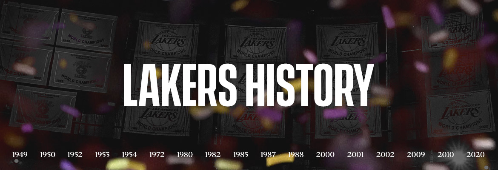
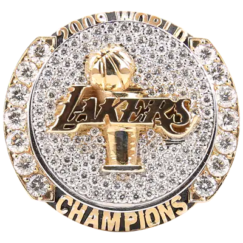
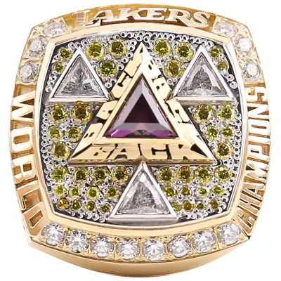
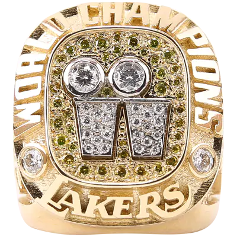
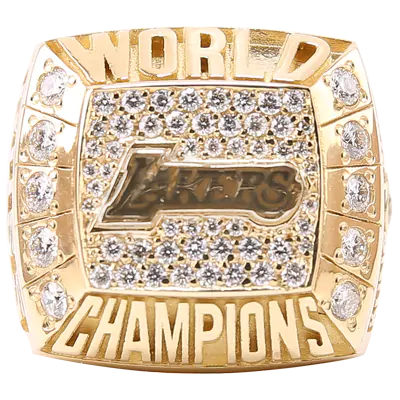
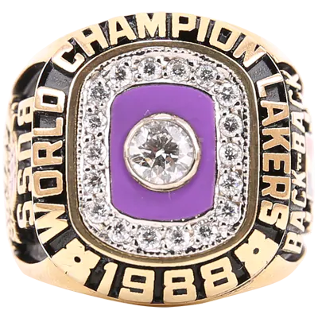
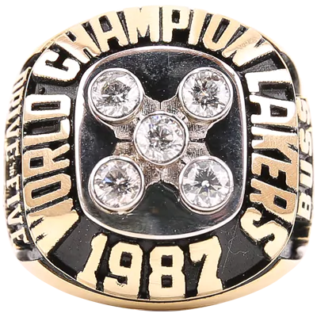
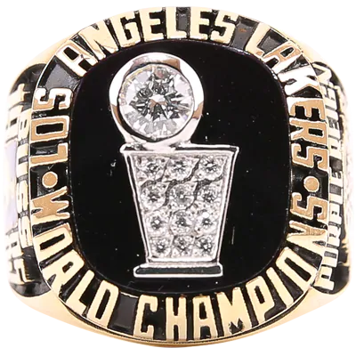
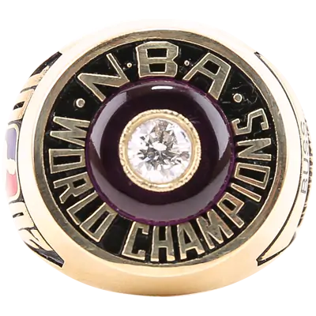
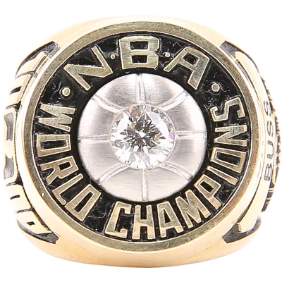

CHAMPIONSHIPS

RINGS
SEASON 2019/2020 - LAKERS DEFEATED MIAMI 4:1 - 1st Seed, Reg. Season (52-19)
SEASON 2009/2010 - LAKERS DEFEATED BOSTON 4:3 - 1st Seed, Reg. Season (57-25)


SEASON 2008/2009 - LAKERS DEFEATED ORLANDO 4:1 - 1st Seed, Reg. Season (65-17)
SEASON 2001/2002 - LAKERS DEFEATED NEW JERSEY 4:0 - 3rd Seed, Reg. Season (58-24)


SEASON 2000/2001 - LAKERS DEFEATED PHILADELPHIA 4:1 - 2nd Seed, Reg. Season (56-26)
SEASON 1999/2000 - LAKERS DEFEATED INDIANA 4:2 - 1st Seed, Reg. Season (67-15)


SEASON 1987/1988 - LAKERS DEFEATED DETROIT 4:3 - 1st Seed, Reg. Season (62-20)
SEASON 1986/1987 - LAKERS DEFEATED BOSTON 4:2 - 1st Seed, Reg. Season (65-17)


SEASON 1984/1985 - LAKERS DEFEATED BOSTON 4:2 - 1st Seed, Reg. Season (62-20)
SEASON 1981/1982 - LAKERS DEFEATED PHILADELPHIA 4:2 - 1st Seed, Reg. Season (57-25)


SEASON 1979/1980 - LAKERS DEFEATED PHILADELPHIA 4:2 - 1st Seed, Reg. Season (60-22)
